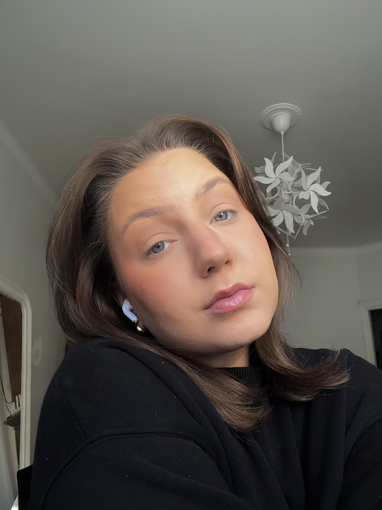

Helsinki
Tietojenkäsittelyn tradenomi opiskelija, digitaalisten palveluiden kehittäminen
Työntekijänä olen hyvin tavoitteellinen, pyrin aina saavuttamaan muiden tai itseni minulle asettamat tavoitteet annettuun päivään mennessä.
Autan mielelläni kollegojani oman osaamiseni puitteissa. Pyrin luomaan työntekijöille helppoja ja mahdollisimman vähän kuormittavia toimintamalleja ja ratkaisuja.
Digitointiasiantuntijana työskentelyn myötä olen kasvattanut paineensietokykyäni sekä ongelmanratkaisutaitojani. Aina ongelman syntyessä pyrin saman tien ryhtyä selvittämään asiaa. Omaksun nopeasti uusien sovelluksien käytön ja niiden ominaisuudet.
Digitointiasiantuntijana sekä Kosmetologiopintojeni myötä olen kasvattanut myös asiakaspalvelu- sekä vuorovaikutustaitojani. Opintojen aikana pääsin tapaamaan monenlaisia ihmisiä ja koenkin, että tulen hyvin toimeen kaikkien kanssa.